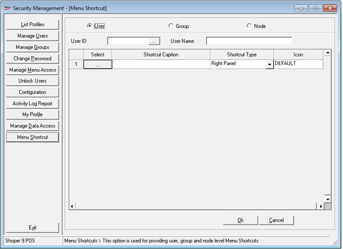

This option helps to create menu shortcuts for Users /Groups/Node by user with administrative rights. These created shortcuts will be displayed in the Shoper main screen.
How to reach: How to reach: Setup > Supervisory Functions > Security Management
On clicking Menu Shortcut, the Security Management – Group Management window is displayed.

User: Select the user for which menu shortcuts needs to be created. Click here to learn more.
Group: Select the Group for which menu shortcuts needs to be created. Creating shortcuts for Group is similar to that of user.
Node: Select the Node for which menu shortcuts needs to be created. Creating shortcuts for Node is similar to that of user.